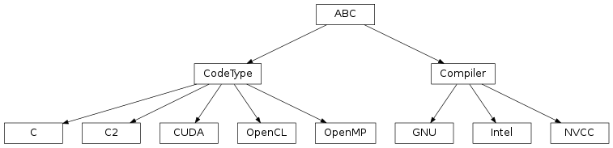

Compilation¶
Input: Code.
Options: …
Output: Executable code.
Script for executing stage: main_compile
Compilation is done by CompileInstance objects each having a CodeType and a Compiler attribute that contain information like file paths and flags that are needed for compilation.
To use additional compilers or code types add corresponding classes / subclasses and if neccessary extend the implementation of CompileInstance for additional functionalities.

.